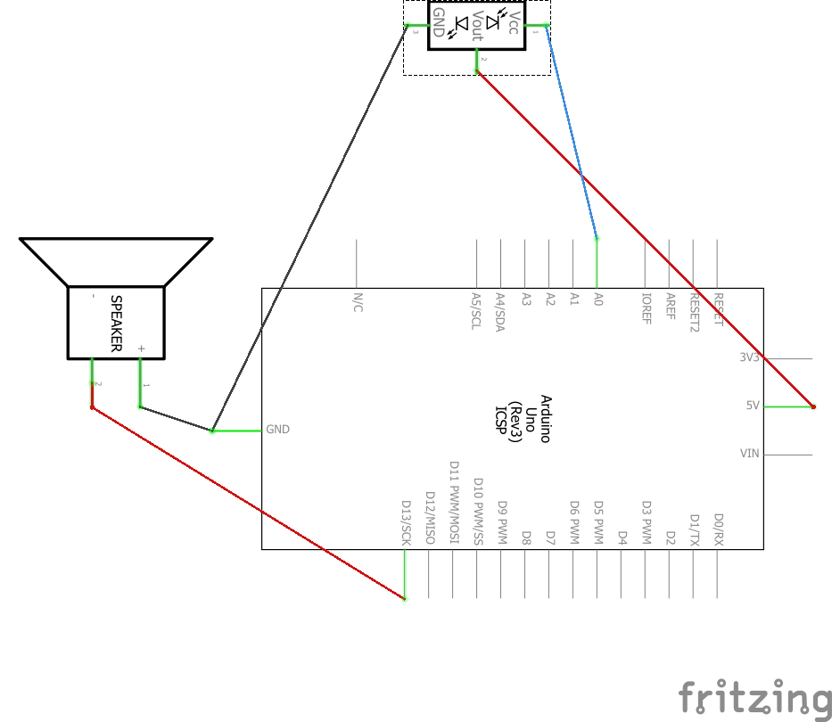
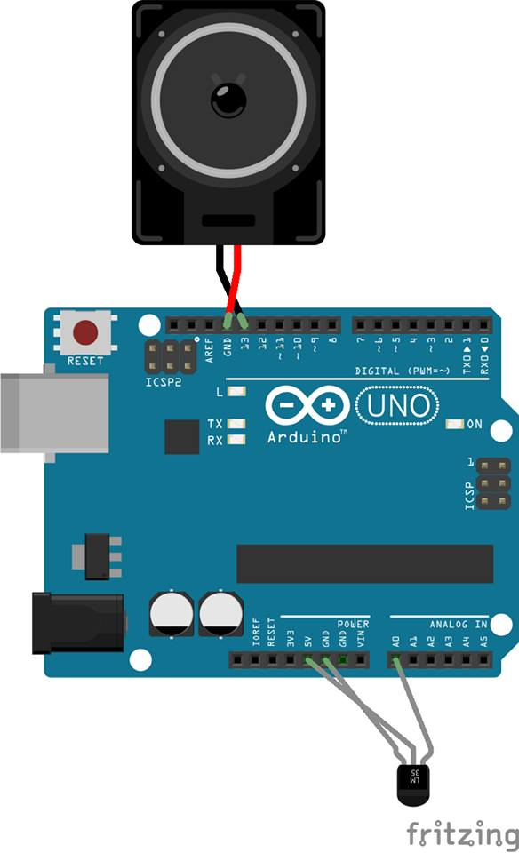

Proximity Sound
Duminica, 24 septembrie 2017, echipa GDRH s-a intalnit pentru prima data in laboratorul de fizica al scolii.
S-a hotarat ca denumirea proiectului realizat sa fie Proximity Sound.
Dupa s-a ales echipa de realizare si rolurile pe care membrii acesteia le vor indeplini.
Pentru realizarea proiectului au fost necesare o placa Arduino, un difuzor si un senzor de distanta.
Dupa stabilirea componentelor, a fost realizata o diagrama folosita in asamblarea proiectului.
 Echipa s-a impartit intre realizarea codului sursa si fotografierea desfasurarii proiectului.
S-a inceput lucrul in vederea programarii proiectului.